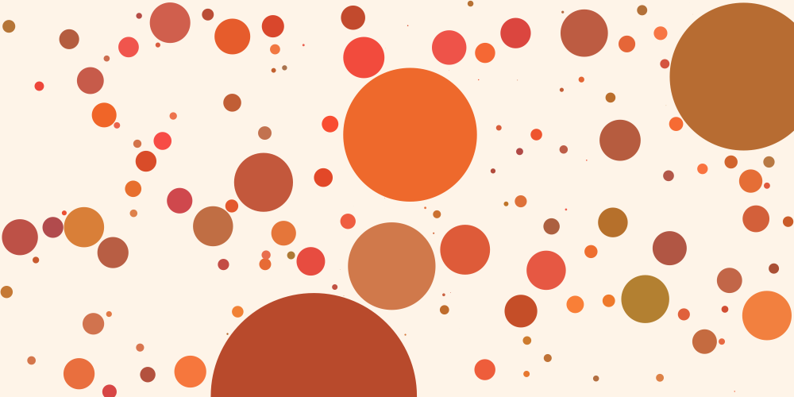

Drawing coloured balls on screen is easy with Processing. Making those balls move and interact with their environment is a little more challenging, but the code to do this can be simplified by creating a simple Ball class. In this project you will develop a simple game that uses a Ball class as basis for your design.
Firstly, make sure you have read the page on developing a simple Ball class. That page took you as far as allowing the balls to bounce off each other within your sketch. Think about how you might add some further interaction (both between balls as well as the 'player' of the game). For example you might make some balls 'eat' others that they bump in to. You might allow one ball controllable with the mouse and the objective of the game might be to avoid the carnivorous balls.
There are plenty of possibilities for developing the bouncing ball sketch into something more interesting. For some inspiration have a look at the game Osmos. You don't have to recreate this game, but it is an example of how adding relatively simple rules to the balls (when two collide, the larger one eats the smaller one and grows a little) can make things interesting.
Here are some possible rules to add to your ball sketch (but feel free to ignore these or add your own):

Bouncing balls that grow when they eat smaller ones.